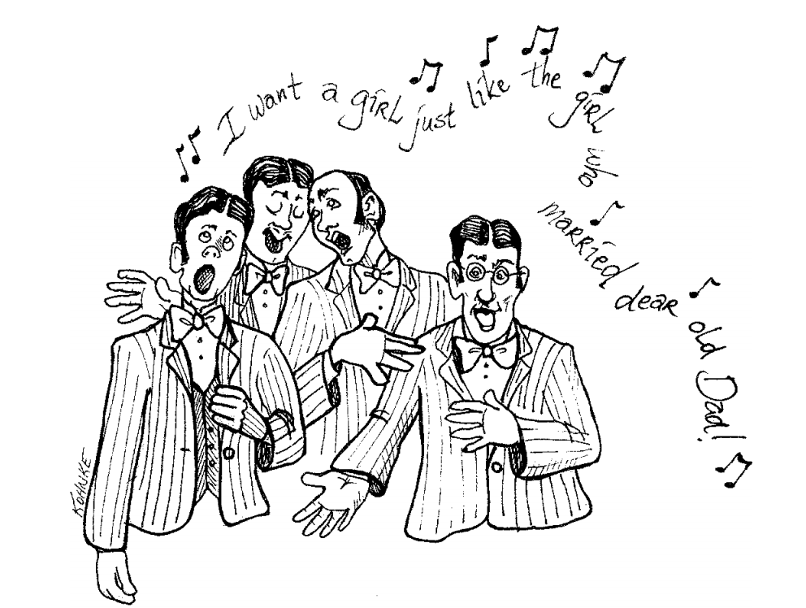

تست های واحد

حرفه ما مسیر زیادی را در طی 10 سال گذشته پیموده است. در سال 1997 هیچکس در مورد توسعه آزمون محور چیزی نشنیده بود. برای اکثریت قریب به اتفاق ما ، تست های واحد چند خط کد بدرد نخور بودند که مطمئن شویم برنامه کار میکند. ما با زحمت کلاس ها و متد هایمان را مینوشتیم و بعد با چندین خط کد کثیف و از سرباز کنی، آن ها را تست می کردیم. معمولاً این حرکت شامل این میشود که یک برنامه درایور ساده را به پروژه اضافه کنیم، تا بتوانیم به صورت دستی کد را تست کنیم.
یادم میاد در اواسط دهه 90 داشتم یک برنامه با زبان ++C برای یک سیستم نهفته می نوشتم. برنامه یک تایمر ساده به شرح زیر بود:
void Timer::ScheduleCommand(Command* theCommand, int milliseconds)
من ... یکی رو میخواستم ... فقط ... اون دختری که از ... دواج ... کرد ... با بابای ... عزیز... و پیرم
در واقع من آن شعر را در حالی که کلید . را تایپ میکردم می خواندم. و بعد آن را دوباره هنگامی که نقطه ها چاپ شده بودند، خواندم.
این تست من شد! بعد از اینکه از کار کردن آن مطمئن شدم و آن را برای همکارانم توضیح دادم، کد تست را پاک کردم.
همینطور که قبلا گفتم، حرفه ما راه زیادی را طی کرده است. امروزه من برای تمام سوراخ و سنبه ها و گوشه های نرم افزار تست می نویسم تا مطمئن باشم همانطوری که من انتظار دارم کار می کند. من وابستگی کد را نسبت به سیستم عامل حذف میکنم، به جای آنکه بخواهم توابع مدیریت زمان مربوط به سیستم عامل را صدا بزنم. من برای کنترل کامل بر زمان، تمام توابع مدیریت زمان را به صورت جعلی می نویسم. من فرمان هایی که پرچم های وضعیت را تغییر می دهند، برنامه ریزی میکنم و بعد زمان را جلو می برم و پرچم ها را زیر نظر میگیرم که مقدارشان از false به true تغییر کند، آن هم درست زمانی که من مقدار زمان را تغییر دهم.
وقتی که تمام تست ها پاس شدند، من مطمئن می شوم که اجرا کردن آن ها برای هر کسی که نیاز دارد با کد کار کند، راحت باشد. همینطور مطمئن می شوم که کد و تست با هم در یک پکیج حاضر شوند.
بله ما راه زیادی را طی کرده ایم. ، اما هنوز باید جلوتر برویم. روش چابک (Agile) و توسعه آزمون محور (TDD) خیلی از برنامه نویس ها را تشویق کرده که تست های واحد اتوماتیک بنویسند و همینطور به تعداد آن ها افزوده می شود. اما عجله زیاد برای افزودن تست، باعث شده که بسیاری از برنامه نویسان نکات مهم و حیاطی نوشتن تست خوب را جا بیندازند.
سه قانون توسعه آزمون محور
تا الان همه می دانند که توسعه آزمون محور از ما میخواهد قبل از نوشتن کد نهایی (Production Code)، تست های واحد را بنویسیم. اما این قانون فقط قسمت کوچکی از توسعه آزمون محور است. این سه قانون را در نظر بگیرید:
قانون اول تنها زمانی شروع به نوشتن کد نهایی کنید که می خواهید یک تست شکست خورده را پاس کنید.
قانون دوم با شکست خوردن تست از نوشتن تست بعدی جلوگیری کنید.
قانون سوم تنها به مقداری کد نهایی بنویسید که برای پاس کردن تست شکست خورده کافی باشد.
این سه قانون شما را وارد یک چرخه ای می کند که شاید 30 ثانیه طول بکشد. تست ها و کد نهایی با هم نوشته می شوند، با این تفاوت که تست ها چند ثانیه از کد نهایی جلوتر هستند.
اگر ما به این روش کار کنیم، ده ها تست به طور روزانه، صد ها تست ماهانه و هزاران تست در سال خواهیم نوشت. اگر به این روش کار کینم، این تست ها تمام کد های نهایی ما را پوشش می دهند. بخش عمده این تست ها که میتواند با اندازه کد نهایی رقابت کند، میتواند یک مشکل مدیریتی دلهره آور را ایجاد کند.
تمیز نگه داشتن کدها
چندسال پیش از من درخواست شده بود تا مربی تیمی شوم که صراحتا تصمیم گرفته بود کد آزمون آن ها نباید مطابق با استاندارد کیفیت تولید آن ها نگهداری
شود.آن ها به یکدیگر اجازه می دادند تا در آزمون های واحد خود قوانین را زیرپا بگذارند.کلیدواژه سریع و کثیف بود.متغیرهای آن ها لازم نیست با نام های خوبی نام گذاری شود و توابع لازم نیست تا کوتاه و توصیفی باشند.کد آزمون آن ها لازم نیست به خوبی طراحی و فکر شده تقسیم بندی شده باشد.تا
زمانی که کد تست کار می کرد و تا زمانی که کدتولید را پوشش می داد به اندازه کافی خوب بود.
بعضی از شماها که در حال خواندن این متن هستید ممکن است با آن همدردری کنید.شاید شما در زمان گذشته آزمون هایی از نوع همان که من برای آن تایمر نوشتم می نوشتید.این یک قدم بزرگ برای نوشتن این نوع آزمون بدردنخور است برای نوشتن مجموعه ای از آزمون های واحد خودکار است.خب مثل تیمی که من مربی آن ها بودم ممکن است شماهم این تصمیم را بگیرید که داشتن آزمون های کثیف بهتر از نداشتن آزمون است.
چیزی که این تیم متوجه نشده بود این بود که داشتن آزمون های کثیف بدتر از نداشتن آزمون است.مشکل این است که آزمون ها باید با تکامل کد تولید تغییر کنند.هرچقدر آن ها کثیف تر باشند سخت تر می توان آن ها را تغییر داد.هرچقدر کد آزمون درهم تر باشد ،احتمال اینکه شما وقت بیشتری را صرف جمع کردن آزمون های بیشتری کنید بیشتر از نوشتن کد تولید جدیداست. همانطور که شما کدهای تولید را تغییر می دهید آزمون های قدیمی شروع به شکست خوردن می کنند و آشفتگی در کد تست ها ،گذراندن مجدد آن آزمون ها را سخت می کند.پس آزمون ها مثل یک بدهی رو به افزایش در نظر گرفته می شوند.
هزینه نگهداری مجموعه آزمایشی تیم من از زمان انتشار تا آزادسازی افزایش یافت.در نهایت این مورد به بزرگترین شکایت در میان توسعه دهندگان تبدیل شدزمانی که مدیران پرسیدند چرا تخمینهایشان اینقدر بزرگ شده است، توسعهدهندگان آزمایشها را مقصر میدانستند.در پایان آنها مجبور شدند مجموعه آزمایشی را به طور کامل دور بیندازند.
اما بدون مجموعه آزمون ها آن ها این توانایی که تغییرات در پایه کد آن ها همان طور که انتظار می رفت کار می کند را از دست دادند.بدون مجموعه آزمون ها آن ها نمی توانستند اطمینان حاصل کنند که تغییرات در یک قسمت از سیستم آن ها باعث خراب شدن سایر بخش های سیستم آن ها نمی شود.بنابراین میزان
نقص آنها شروع به افزایش کرد.با افزایش تعداد نقص های ناخواسته، آنها شروع به ترس از ایجاد تغییرات کردند .آن ها تمیز کردن کدهایشان را متوقف .کردند زیرا می ترسیدند تغییرات آن ها بیشتر از اینکه مفید باشد ضرر داشته باشد.کد تولید آن ها شروع به پوسیده شدن کرد.در آخرآن ها بدون آزمون ها ماندند . کد تولیددرهم و پر از اشکال ،مشتریان نا امید شدند و احساس می کردند آزمایش آن ها را شکست داده است
به نوعی حق با آن ها بود آزمایش آن ها را شکست داده بوداما این تصمیم آن ها بود که اجازه دادند کدها درهم باشند و این بذر شکست آن ها را کاشت!اگر کد ها را تمیز نگه می داشتند آزمایش آن ها شکست نمی خورد.این را می توانم با قاطعیت بگویم زیرا در تیم های زیادی حضور داشته و مربیگری کرده ام که با واحد تمیز موافق بوده اند.
نکته اخلاقی داستان ساده است کد آزمون ها به اندازه کد تولید مهم است.این یک جنس درجه دو یا کم ارزش نیست پس نیاز به تفکر و طراحی دارد و باید همانند کد تولید تمیز نگه داشته شود.
آزمون ها مشکلات را به وجود می آورند
اگر شما کدهایتان را تمیز نگهداری نکنید آن ها را از دست خواهید داد،و بدون آن ها شما همان چیزی که تولید شما را منعطف نگه می دارد را از دست می دهید.بله شما آن را درست خواندید . این آزمون های واحد هستند که کد ما را انعطاف پذیر ،قابل نگهداری و قابل استفاده مجدد نگه می دارند.علت آن ساده است، اگر شما آزمون ها را دارید دیگر نباید از تغییر در کدهایتان بترسید! بدون آزمون ها هر تغییری می تواند یک مشکل باشد. مهم نیست که معماری کد شما چقدر انعطاف پذیر است،مهم نیست طراحی شما چقدر خوب تقسیم بندی شده است ،بدون آزمون ها شما از ترس اینکه اشکالات شناسایی نشده را معرفی کنید تمایلی به ایجاد تغییرات ندارید.
اما با داشتن آزمون ها ترس ها عملا از بین می روند هر چقدر پوشش تست شما بیشتر باشد شما کمتر می ترسید. شما می توانید بدون جریمه کدهایی را تغییر که معماری کمتر ستاره ای و طراحی درهم و نا واضح هستند در واقع شما می توانید آن معماری را بدون ترس بهبود ببخشید.بنابر این داشتن مجموعه ای خودکار از آزمون های واحد که کد تولید را پوشش می دهند کلید این است تا معماریتان و طراحیتان را به تمیز ترین شکل ممکن نگهداری کنید.آزمون ها مشکلات را فعال می کنند زیرا آزمون ها اعمال تغییرات را امکان پذیر می کنند.
پس اگر کد آزمون های شما کثیف هستند شما برای اینکه در کدتان تغییر ایجاد کنید با مشکل مواجه می شوید و شما شروع به از دست دادن توانایی خود در ایجاد بهبود درساختار آن کد می شوید.هر چقدر آزمون های شما کثیف تر باشد کد شما نیز کثیف تر می شود. در نهایت آزمون ها را از دست می دهیدو کد شما پوسیده می شود.
آزمون های تمیز
چه چیزی یک تست تمیز را می سازد؟سه چیز:خوانایی،خوانایی و خوانایی.خوانایی شاید در آزمون های واحد مهم تر از کد تولید باشد.چه چیزی یک آزمون را خوانا می کند؟همان چیزی که همه کدها را قابل خواندن می کند :در یک آزمون شما می خواهید با کمترین عبارات ممکن چیزهای زیادی بگویید.
کد FitNesse را در فهرست 9-1 در نظر بگیرید. درک این سه آزمون دشوار است و مطمئناً قابل بهبود هستند. اول، مقدار وحشتناکی از کد تکراری [G5] در تماس های مکرر به addPage و assertSubString وجود دارد. مهمتر از آن، این کد فقط با جزئیاتی بارگذاری شده است که با بیان آزمون تداخل دارد.
Listing 9-1 -- SerializedPageResponderTest.java
public void testGetPageHieratchyAsXml() throws Exception {
crawler.addPage(root, PathParser.parse("PageOne"));
crawler.addPage(root, PathParser.parse("PageOne.ChildOne"));
crawler.addPage(root, PathParser.parse("PageTwo"));
request.setResource("root");
request.addInput("type", "pages");
Responder responder = new SerializedPageResponder();
SimpleResponse response =
(SimpleResponse) responder.makeResponse(
new FitNesseContext(root), request);
String xml = response.getContent();
assertEquals("text/xml", response.getContentType());
assertSubString("<name>PageOne</name>", xml);
assertSubString("<name>PageTwo</name>", xml);
assertSubString("<name>ChildOne</name>", xml);
}
public void testGetPageHieratchyAsXmlDoesntContainSymbolicLinks()
throws Exception {
WikiPage pageOne = crawler.addPage(root, PathParser.parse("PageOne"));
crawler.addPage(root, PathParser.parse("PageOne.ChildOne"));
crawler.addPage(root, PathParser.parse("PageTwo"));
PageData data = pageOne.getData();
WikiPageProperties properties = data.getProperties();
WikiPageProperty symLinks = properties.set(SymbolicPage.PROPERTY_NAME);
symLinks.set("SymPage", "PageTwo");
pageOne.commit(data);
request.setResource("root");
request.addInput("type", "pages");
Responder responder = new SerializedPageResponder();
SimpleResponse response =
(SimpleResponse) responder.makeResponse(
new FitNesseContext(root), request);
String xml = response.getContent();
assertEquals("text/xml", response.getContentType());
assertSubString("<name>PageOne</name>", xml);
assertSubString("<name>PageTwo</name>", xml);
assertSubString("<name>ChildOne</name>", xml);
assertNotSubString("SymPage", xml);
}
public void testGetDataAsHtml() throws Exception {
crawler.addPage(root, PathParser.parse("TestPageOne"), "test page");
request.setResource("TestPageOne");
request.addInput("type", "data");
Responder responder = new SerializedPageResponder();
SimpleResponse response =
(SimpleResponse) responder.makeResponse(
new FitNesseContext(root), request);
String xml = response.getContent();
assertEquals("text/xml", response.getContentType());
assertSubString("test page", xml);
assertSubString("Test", xml);
}
در نهایت این کد برای خواندن طراحی نشده است.خواننده کم تجربه با انبوهی از جزییات مواجه می شود که قبل از اینکه آزمون ها واقعی شوند ( اجرایی شوند ) باید درک شوند. اکنون آزمون های بهبود یافته در فهرست 9-2 را در نظر بگیرید.
این آزمون ها دقیقاً همین کار را انجام میدهند، اما به شکلی بسیار تمیزتر و واضح تر تبدیل شدهاند.
Listing 9-2 -- SerializedPageResponderTest.java (refactored)
public void testGetPageHierarchyAsXml() throws Exception {
makePages("PageOne", "PageOne.ChildOne", "PageTwo");
submitRequest("root", "type:pages");
assertResponseIsXML();
assertResponseContains(
"<name>PageOne</name>", "<name>PageTwo</name>", "<name>ChildOne</name>")
}
public void testSymbolicLinksAreNotInXmlPageHierarchy() throws Exception {
WikiPage page = makePage("PageOne");
makePages("PageOne.ChildOne", "PageTwo");
addLinkTo(page, "PageTwo", "SymPage");
submitRequest("root", "type:pages");
assertResponseIsXML();
assertResponseContains(
"<name>PageOne</name>", "<name>PageTwo</name>", "<name>ChildOne</name>");
assertResponseDoesNotContain("SymPage");
}
public void testGetDataAsXml() throws Exception {
makePageWithContent("TestPageOne", "test page");
submitRequest("TestPageOne", "type:data");
assertResponseIsXML();
assertResponseContains("
}
توجه داشته باشید که بیشترجزییات آزاردهنده (مشکل ساز) حذف شده اند. تست ها دقیقاً به نقطه اصلی می رسند و فقط از داده ها و توابعی استفاده می کنند که واقعاً به آنها نیاز دارند. هر کسی که این آزمون ها را میخواند باید بتواند کارهایی را که انجام میدهد خیلی سریع بدون اشتباه یا بدون دقت در جزئیات انجام دهد.
زبان آزمون دامنه خاص
آزمون های فهرست 9-2 تکنیک ساخت یک زبان دامنه خاص برای آزمونهای شما را نشان میدهند. بهجای استفاده از APIهایی که برنامهنویسان برای دستکاری سیستم استفاده میکنند، مجموعهای از توابع و ابزارهای کاربردی ایجاد میکنیم که از آن APIها استفاده میکنند و تستها را برای نوشتن راحتتر و خواندن آسانتر میکنند. این توابع و ابزارهای کاربردی تبدیل به یک API تخصصی می شوند که توسط آزمون ها استفاده می شود. آنها یک زبان آزمون هستند که برنامه نویسان برای کمک به خودشان در نوشتن آزمون ها و برای کمک به کسانی که بعداً باید آن آزمون ها را بخوانند از آن استفاده می کنند.
این API آزمایشی از قبل طراحی نشده است. بلکه از بازسازی مداوم کد آزمون که بیش از حد با جزئیات مبهم شده است، به وجود آمده است همانطور که دیدید من لیست 9-1 را به لیست 9-2 تغییر می دهم، توسعه دهندگان منظم تر نیز کد آزمون خود را به شکل های مختصر و گویا تر تغییر می دهند.
یک استاندارد دوگانه
از طرفی تیمی که در ابتدای فصل به آن اشاره کردم شرایط درستی داشت. کد موجود در API آزمایشی دارای مجموعهای از استانداردهای مهندسی متفاوت از کد تولید است. هنوز هم باید ساده، مختصر و گویا باشد، اما لازم نیست به اندازه کد تولید کارآمد باشد. به هر حال، در یک محیط آزمون اجرا می شود، نه یک محیط تولید، و این دو محیط نیازهای بسیار متفاوتی دارند.
آزمون فهرست 9-3 را در نظر بگیرید. من این آزمون را به عنوان بخشی از یک سیستم کنترل محیط که در حال ساخت نمونه اولیه بودم نوشتم.
بدون پرداختن به جزئیات، میتوانید بگویید که این آزمایش بررسی میکند که هشدار دمای پایین، بخاری و دمنده همگی در زمانی که دما «خیلی پایین است» روشن میشوند.
Listing 9-3 -- EnvironmentControllerTest.java
@Test
public void turnOnLoTempAlarmAtThreashold() throws Exception {
hw.setTemp(WAY_TOO_COLD);
controller.tic();
assertTrue(hw.heaterState());
assertTrue(hw.blowerState());
assertFalse(hw.coolerState());
assertFalse(hw.hiTempAlarm());
assertTrue(hw.loTempAlarm());
}
من خواندن این آزمون را با تبدیل آن به لیست 9-4 بسیار بهبود دادم.
Listing 9-4 -- EnvironmentControllerTest.java (refactored)
@Test
public void turnOnLoTempAlarmAtThreshold() throws Exception {
wayTooCold();
assertEquals("HBchL", hw.getState());
}
اگرچه این امر شبیه به یک تجسم ذهنی است، در این مورد مناسب به نظر می رسد. توجه کنید، هنگامی که متوجه آن باشید، چشمانتان به سمت آن سر می خورد آن رشته و شما می توانید به سرعت نتایج را تفسیر کنید. خواندن تست تقریباً به یک لذت تبدیل می شود. فقط نگاهی به لیست 9-5 بیندازید و ببینید درک این تست ها چقدر آسان است.
Listing 9-5 -- EnvironmentControllerTest.java (bigger selection)
@Test
public void turnOnCoolerAndBlowerIfTooHot() throws Exception {
tooHot();
assertEquals("hBChl", hw.getState());
}
@Test
public void turnOnHeaterAndBlowerIfTooCold() throws Exception {
tooCold();
assertEquals("HBchl", hw.getState());
}
@Test
public void turnOnHiTempAlarmAtThreshold() throws Exception {
wayTooHot();
assertEquals("hBCHl", hw.getState());
}
@Test
public void turnOnLoTempAlarmAtThreshold() throws Exception {
wayTooCold();
assertEquals("HBchL", hw.getState());
}
Listing 9-6 -- MockControlHardware.java
public String getState() {
String state = "";
state += heater ? "H" : "h";
state += blower ? "B" : "b";
state += cooler ? "C" : "c";
state += hiTempAlarm ? "H" : "h";
state += loTempAlarm ? "L" : "l";
return state;
}
این طبیعت استاندارد دوگانه است. در محیط آزمون چیزهایی وجود دارند که ممکن است شما در محیط تولید انجام ندهید اما در محیط آزمون بسیار خوب هستند.معمولا آن ها مسائل مربوط به حافظه و کارایی پردازنده را شامل می شوند.اما آن ها هرگز مسائل تمیزی کد را شامل نمی شوند.
یک ادعا در آزمون
یک مکتب فکری وجود دارد که می گوید هر تابع آزمون در یک آزمون JUnit باید یک و فقط یک عبارت ادعا داشته باشد. این قانون ممکن است سخت بنظر برسد اما مزیت آن را می توان در لیست 5-9 مشاهده کرد.آن آزمون ها به نتایج واحد می رسند که درک آن آسان و سریع است.
Listing 9-7 -- SerializedPageResponderTest.java (Single Assert)
public void testGetPageHierarchyAsXml() throws Exception {
givenPages("PageOne", "PageOne.ChildOne", "PageTwo");
whenRequestIsIssued("root", "type:pages");
thenResponseShouldBeXML();
}
public void testGetPageHierarchyHasRightTags() throws Exception {
givenPages("PageOne", "PageOne.ChildOne", "PageTwo");
whenRequestIsIssued("root", "type:pages");
thenResponseShouldContain(
"<name>PageOne</name>", "<name>PageTwo</name>", "<name>ChildOne</name>");
}
توجه داشته باشید من اسم تابع ها را عوض کردم تا از قرارداد مشترک given-whenthen5 convention تغییر دادم.این آزمون ها را خیلی خوانا تر می کند. متأسفانه، تقسیم تست ها همانطور که نشان داده شده است باعث ایجاد کدهای تکراری زیادی می شود.
میتوانیم با استفاده از الگوی TEMPLATE METHOD و قرار دادن قسمتهای دادهشده در کلاس پایه، و قسمتها سپس در مشتقات مختلف، تکرار را حذف کنیم. یا میتوانیم یک کلاس آزمون کاملاً مجزا ایجاد کنیم و قسمتهای داده شده, and when را در تابع @Before و قسمتهای When را در هر تابع @Test قرار دهیم. اما به نظر می رسد این مکانیسم بیش از حد برای چنین موضوع جزئی است. در پایان، من ادعاهای متعدد در فهرست 9-2 را ترجیح می دهم.
من فکر میکنم قانون ادعای واحد راهنمایی خوبی است. من معمولاً سعی می کنم یک زبان آزمایشی خاص دامنه ایجاد کنم که از آن پشتیبانی کند، مانند فهرست9-5 . اما من از قرار دادن بیش از یک ادعا در یک آزمون نمی ترسم. من فکر می کنم بهترین چیزی که می توانیم بگوییم این است که تعداد ادعاها در یک آزمون باید به کمترین میزان برسد.
مفهوم واحد در هر آزمون
شاید یک قانون بهتر این باشد که ما می خواهیم یک مفهوم واحد را در هر تابع آزمون آزمایش کنیم . ما توابع آزمون طولانی نمی خواهیم که موارد متفرقه را یکی پس از دیگری آزمایش کنند. فهرست 9-8نمونه ای از چنین آزمونی است. این آزمون باید به سه آزمون مستقل تقسیم شود زیرا سه چیز مستقل را آزمایش می کند. ادغام همه آنها در یک تابع یکسان خواننده را وادار می کند تا دریابد که چرا هر بخش وجود دارد و چه چیزی توسط آن بخش آزمایش می شود.
Listing 9-8
/**
* Miscellaneous tests for the addMonths() method.
*/
public void testAddMonths() {
SerialDate d1 = SerialDate.createInstance(31, 5, 2004);
SerialDate d2 = SerialDate.addMonths(1, d1);
assertEquals(30, d2.getDayOfMonth());
assertEquals(6, d2.getMonth());
assertEquals(2004, d2.getYYYY());
SerialDate d3 = SerialDate.addMonths(2, d1);
assertEquals(31, d3.getDayOfMonth());
assertEquals(7, d3.getMonth());
assertEquals(2004, d3.getYYYY());
SerialDate d4 = SerialDate.addMonths(1, SerialDate.addMonths(1, d1));
assertEquals(30, d4.getDayOfMonth());
assertEquals(7, d4.getMonth());
assertEquals(2004, d4.getYYYY());
}
سه تابع آزمون احتمالاً باید به این صورت باشد:
با توجه به آخرین روز یک ماه با 31 روز (مانند اردیبهشت):
1- وقتی یک ماه اضافه کنید، به طوری که آخرین روز آن ماه سی ام باشد(مثل ژوئن) پس تاریخ باید 30 آن ماه باشد، نه
31
2- وقتی دو ماه به آن تاریخ اضافه کنید، به طوری که ماه آخر 31 روز باشد، سپس تاریخ باید 31 باشد
با توجه به آخرین روز یک ماه با 30 روز (مثل ژوئن):
1- وقتی یک ماه را طوری اضافه کنید که آخرین روز آن ماه 31 روز داشته باشد، تاریخ باید سی ام باشد نه سی و یکمین.
با بیان اینگونه، میتوانید ببینید که یک قانون کلی در میان آزمایشهای متفرقه پنهان شده است. وقتی ماه را افزایش می دهید، تاریخ نمی تواند بزرگتر از آخرین روز ماه باشد. این بدان معناست که افزایش ماه در 28 فوریه باید 28 مارس را به همراه داشته باشد. آن آزمون برای نوشتن آزمون مفیدی خواهد بود.
بنابراین این ادعاهای متعدد در هر بخش از فهرست 9-8 نیست که باعث ایجاد مشکل می شود. بلکه این واقعیت است که بیش از یک مفهوم در حال آزمایش است. بنابراین احتمالاً بهترین قانون این است که شما باید تعداد ادعاها هر مفهوم را به کمترین میزان برسانید و فقط یک مفهوم را در هر تابع آزمون آزمایش کنید.
F.I.R.S.T
آزمون های تمیز از پنج قانون دیگر پیروی می کنند که موارد زیر را تشکیل می دهند:
آزمون های سریع باید سریع باشند. آنها باید سریع اجرا کنند. وقتی آزمون ها کند هستند، نمیخواهید آنها را مرتب اجرا کنید. اگر آنها را به طور مکرر اجرا نکنید، آنقدر زود مشکلاتی پیدا نخواهید کرد که به راحتی آنها را برطرف کنید. شما برای پاک کردن کد احساس آزادی نخواهید کرد. در نهایت کد شروع به پوسیدگی می کند.
آزمون های مستقل نباید به یکدیگر وابسته باشند. یک آزمون نباید شرایط آزمون بعدی را فراهم کند. شما باید بتوانید هر تست را به طور مستقل اجرا کنید و تست ها را به هر ترتیبی که دوست دارید اجرا کنید. وقتی تست ها به یکدیگر بستگی دارند، اولین موردی که شکست می خورد باعث زنجیر می شود
خرابی های دست پایین، تشخیص را دشوار می کند و نقص های پایین دست را پنهان می کند
آزمون های قابل تکرار باید در هر محیطی قابل تکرار باشند. شما باید بتوانید آزمون ها را در محیط تولید، در محیط QA و روی لپ تاپ خود در حالی که بدون شبکه در قطار به خانه می روید انجام دهید. اگر آزمون های شما در هیچ محیطی قابل تکرار نیستند، آنگاه همیشه بهانه ای برای شکست آنها خواهید داشت. همچنین زمانی که محیط در دسترس نباشد، نمی توانید آزمایش ها را اجرا کنید.
خود اعتبارسنجی آزمون ها باید خروجی boolean داشته باشند. یا می گذرند یا شکست می خورند. برای تشخیص موفقیت آمیز بودن آزمون ها، مجبور نیستید یک فایل گزارش را بخوانید. شما نباید به صورت دستی دو فایل متنی مختلف را با هم مقایسه کنید تا ببینید آیا آزمون ها موفق می شوند یا خیر. اگر آزمایش ها اینطور نیستند
خود تأیید می شود، سپس شکست می تواند ذهنی شود
آزمون ها باید به موقع نوشته شوند. آزمون های واحد باید درست قبل از کد تولیدی که باعث قبولی آنها می شود نوشته شود. اگر آزمون ها را بعد از کد تولید بنویسید، ممکن است آزمون کد تولید سخت باشد. ممکن است تصمیم بگیرید که آزمایش برخی از کدهای تولید خیلی سخت است. ممکن است کد تولید را طوری طراحی نکنید که قابل آزمایش باشد.
نتیجه
ما به خوبی آزمون ها را بررسی کرده ایم . در واقع، من فکر می کنم می توان یک کتاب کامل در مورد آزمون های تمیز نوشت. آزمون ها به اندازه کد تولید برای سلامت یک پروژه مهم هستند حتی شاید مهم تر باشند، زیرا آزمایش ها باعث حفظ و تقویت انعطاف پذیری، قابلیت نگهداری و قابلیت استفاده مجدد کد تولید می شوند. آزمون های خود را دائماً تمیز نگه دارید. کار کنید تا آنها را رسا و مختصر کنید API. های آزمایشی را اختراع کنید که به عنوان زبان مخصوص دامنه عمل می کنند و به شما در نوشتن آزمون ها کمک می کنند. اگر اجازه بدهید آزمون ها پوسیده شوند، کد شما نیز پوسیده می شودپس آزمون های خود را تمیز نگه دارید.